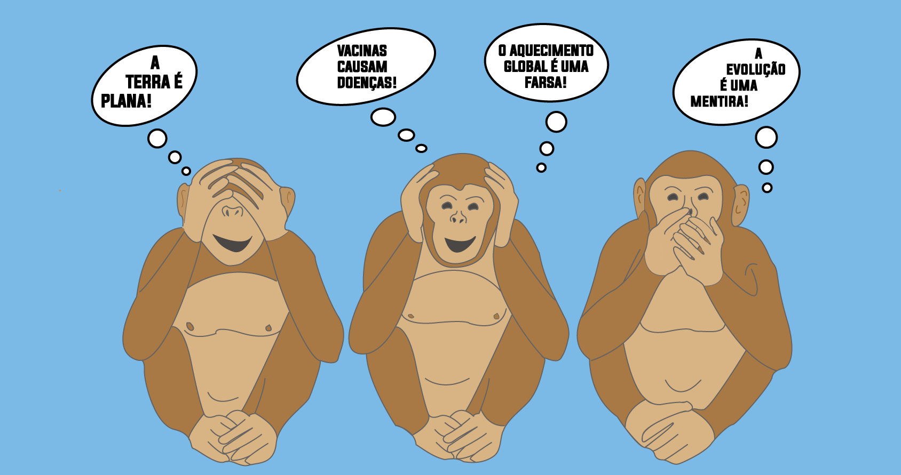
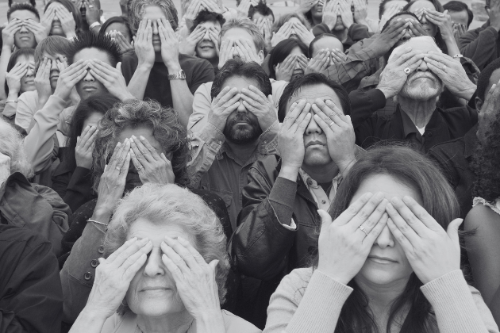

O negacionismo é o ato de negar-se a acreditar em uma informação estabelecida em áreas como a ciência e a história. Os negacionistas são vistos como irracionais, pois não acreditam em consensos obtidos por amplo e profundo estudo e escoram suas crenças em informações falsas e teorias conspiratórias. A negação do Holocausto é uma das principais manifestações negacionistas.
O negacionismo é um conceito utilizado para explicar o grupo de pessoas que optam voluntariamente por não acreditar em uma informação que é vista como consenso nos meios acadêmicos e científicos. Nesse sentido, o negacionismo pode ser visto também como o ato de propor um debate desnecessário sobre determinado assunto.
Um debate desnecessário se dá no sentido de abordar e questionar um problema cuja concepção é vista como unanimidade entre os especialistas. Esse tipo de debate advém da negação daquela concepção, e essa negação não se baseia em fatos comprovados e aceitos.
Recentemente inúmeras posições negacionistas ganharam espaço, sobretudo na internet, e um exemplo de ação negacionista e da criação de um debate que não existe entre os especialistas é a questão da posição do nazismo no espectro político.
Entre os maiores especialistas da historiografia no estudo do nazismo, não há questionamento sobre o fato de que o nazismo foi um movimento de extrema-direita. No entanto, muitos passaram a defender negações dessa definição realizada pelos historiadores, alegando, sem embasamento histórico, que o nazismo era um movimento de extrema-esquerda.
O negacionismo parte sempre de teorias conspiratórias, supostamente trazendo informações reais de um determinado assunto. Essas “teorias” afirmam trazer a “verdade oculta” e alegam que essa verdade foi escondida por uma grande conspiração, que tem como objetivo esconder tal realidade das pessoas.
Os negacionistas existentes são variados, mas todos eles possuem características em comum que nos ajudam a entender um pouco do seu perfil e de como se estrutura uma ideia negacionista. O ponto de partida para uma teoria negacionista é a boa retórica de seu emissor. Sendo assim, a boa capacidade argumentativa é fundamental para que o negacionismo possa convencer e enganar outras pessoas.
Como mencionado, os negacionistas se escoram em teorias conspiratórias, evocando a falsa de ideia de que há uma verdade oculta que não é divulgada por haver por trás dela uma grande conspiração internacional.
Além disso, os negacionistas manipulam informações, o que envolve a descontextualização de algumas delas, a supressão de outras, e até mesmo o falseamento claro de dados. Muitas vezes, essa manipulação se dá pela utilização de falsos especialistas, isto é, a apresentação de pessoas que supostamente são especialistas em determinado assunto, mas que, na verdade, são charlatães, pois as visões e informações que elas têm sobre o assunto em questão são totalmente divergentes do conhecimento estabelecido.
Ao longo da história, uma série de teorias negacionistas surgiram, e os dois principais âmbitos nos quais elas se estabeleceram foram o da ciência e o da história. Sendo assim, definições da ciência vistas como unanimidade entre os pesquisadores são questionadas com base de falsas evidências, e fatos da história que são consenso entre os historiadores também são questionados por negacionistas.
Uma das teorias negacionistas de maior alcance e mais combatidas por especialistas da área é a que afirma que o Holocausto não aconteceu e que ele foi uma falsificação. Essa afirmação é falsa, uma vez que a historiografia possui amplas evidências, como documentos, edifícios, imagens, filmagens e depoimentos, que comprovam a existência do Holocausto.
É bom lembrar que o Holocausto foi o genocídio de judeus realizado pelos nazistas durante a Segunda Guerra Mundial. Esse crime contra a humanidade foi executado de diversas maneiras, e os judeus foram mortos, principalmente, em campos de concentração ou então fuzilados por grupos de extermínio. Cerca de seis milhões de pessoas morreram.
Os negacionistas do Holocausto afirmam que a morte de judeus não foi um genocídio, pois argumentam que não se tratava de uma política de extermínio e sim de um fruto da Segunda Guerra Mundial. Eles, ainda, questionam a existência de campos de concentração e das câmaras de gás — locais onde milhões de judeus foram assassinados. Para saber mais sobre esse acontecimento assustador da história europeia e, por isso mesmo, difícil de ser assumido, leia: Holocausto.
O negacionismo do Holocausto é apenas uma das inúmeras teorias do tipo que existem. Existem aqueles, por exemplo, que afirmam que o cigarro não causa câncer, e, durante décadas, lobby e falsos estudos foram usados para demonstrar que o cigarro não causava câncer nos fumantes ativos e passivos. Cientistas sérios mostraram, por inúmeras evidências, os malefícios dessa droga à saúde humana.
Outro negacionismo visto frequentemente é o daqueles que afirmam que o aquecimento global é uma farsa. Sabemos que o aquecimento global é uma realidade e que é inteiramente causado pela ação humana, sobretudo pelo consumo de combustíveis fósseis. Muitas das teorias que negam o aquecimento global são resultado de lobby de empresas petrolíferas com o intuito de esconder os problemas do consumo excessivo de combustíveis como o petróleo.
As teorias negacionistas também questionam a forma da Terra. Desde a Antiguidade clássica, já existiam intelectuais com evidências para comprovar a esfericidade do nosso planeta. Atualmente trata-se de uma conclusão muito fácil de ser realizada porque a tecnologia nos permite isso. Entretanto, muitos ainda acreditam que a Terra seja plana.
No campo da história, existem aqueles que negam a existência do genocídio armênio, realizado pelo Império Otomano durante a Primeira Guerra Mundial; existem também os que se negam a acreditar nos massacres realizados por sérvios contra bosníacos, durante a Guerra da Bósnia. Aqui no Brasil, existem os que se negam a acreditar que nosso país viveu um período ditatorial com ampla violação dos direitos da população.
O negacionismo é um conceito que explica a ação de uma pessoa em negar um fato amplamente estudado e comprovado.
Entre as características básicas do negacionismo, estão a manipulação de informações, a utilização de falsos especialistas e o embasamento em teorias conspiratórias.
O negacionista assume uma postura irracional, pois prefere acreditar em informações falsas e sem comprovação do que na ciência e em verdades inconvenientes.
Na história, destaca-se o negacionismo do Holocausto.
Na ciência, destacam-se o negacionismo do aquecimento global e o da esfericidade da Terra.
 Maiara 27,Taina 36, yasmim 39, 1A